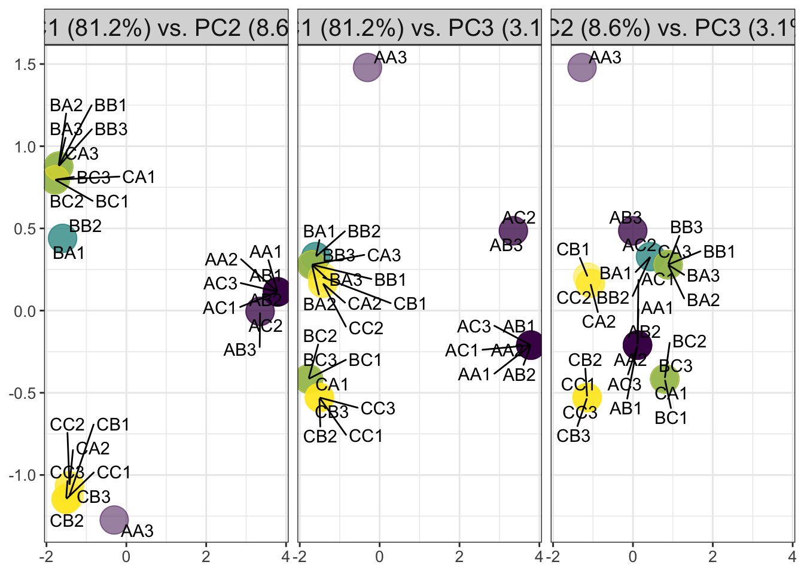

SNP_clusters
MartinGarlovsky
2023-03-02
Last updated: 2024-10-10
Checks: 7 0
Knit directory: mito_age_fert/
This reproducible R Markdown analysis was created with workflowr (version 1.7.1). The Checks tab describes the reproducibility checks that were applied when the results were created. The Past versions tab lists the development history.
Great! Since the R Markdown file has been committed to the Git repository, you know the exact version of the code that produced these results.
Great job! The global environment was empty. Objects defined in the global environment can affect the analysis in your R Markdown file in unknown ways. For reproduciblity it’s best to always run the code in an empty environment.
The command set.seed(20230213) was run prior to running
the code in the R Markdown file. Setting a seed ensures that any results
that rely on randomness, e.g. subsampling or permutations, are
reproducible.
Great job! Recording the operating system, R version, and package versions is critical for reproducibility.
Nice! There were no cached chunks for this analysis, so you can be confident that you successfully produced the results during this run.
Great job! Using relative paths to the files within your workflowr project makes it easier to run your code on other machines.
Great! You are using Git for version control. Tracking code development and connecting the code version to the results is critical for reproducibility.
The results in this page were generated with repository version ef4cc07. See the Past versions tab to see a history of the changes made to the R Markdown and HTML files.
Note that you need to be careful to ensure that all relevant files for
the analysis have been committed to Git prior to generating the results
(you can use wflow_publish or
wflow_git_commit). workflowr only checks the R Markdown
file, but you know if there are other scripts or data files that it
depends on. Below is the status of the Git repository when the results
were generated:
Ignored files:
Ignored: .DS_Store
Ignored: .Rhistory
Ignored: .Rproj.user/
Ignored: data/.DS_Store
Untracked files:
Untracked: README.html
Untracked: check_lines.R
Untracked: code/data_wrangling.R
Untracked: code/plotting_Script.R
Untracked: data/Data_raw_emmely.csv
Untracked: data/defence.csv
Untracked: data/male_fertility.csv
Untracked: data/mito_34sigdiffSNPs_consensus_incl_colnames.csv
Untracked: data/mito_mt_copy_number.xlsx
Untracked: data/mito_mt_seq_major_alleles_sig_snptable.csv
Untracked: data/mito_mt_seq_sig_annotated.csv
Untracked: data/mito_mt_seq_sig_annotated.vcf
Untracked: data/offence.csv
Untracked: data/rawdata_PCA.csv
Untracked: data/snp-gene.txt
Untracked: data/sperm_metabolic_rate.csv
Untracked: data/sperm_viability.csv
Untracked: data/wrangled/
Untracked: figures/
Untracked: output/SNP_clusters.csv
Untracked: output/bod_brm.rds
Untracked: output/female_rate_dredge.rds
Untracked: output/female_rates_bb.Rdata
Untracked: output/female_rates_boot.Rdata
Untracked: output/female_rates_poly.Rdata
Untracked: output/male_fec_dredge.rds
Untracked: output/male_hatch_dredge.rds
Untracked: output/male_hatch_dredge_reduced.rds
Untracked: output/sperm_met_dredge.rds
Untracked: output/viab_ctrl_dredge.rds
Untracked: output/viab_trt_dredge.rds
Untracked: snp_matrix_dobler.csv
Unstaged changes:
Deleted: analysis/sperm_comp.Rmd
Modified: data/README.md
Note that any generated files, e.g. HTML, png, CSS, etc., are not included in this status report because it is ok for generated content to have uncommitted changes.
These are the previous versions of the repository in which changes were
made to the R Markdown (analysis/SNP_clusters.Rmd) and HTML
(docs/SNP_clusters.html) files. If you’ve configured a
remote Git repository (see ?wflow_git_remote), click on the
hyperlinks in the table below to view the files as they were in that
past version.
| File | Version | Author | Date | Message |
|---|---|---|---|---|
| Rmd | ef4cc07 | MartinGarlovsky | 2024-10-10 | wflow_publish("analysis/SNP_clusters.Rmd") |
Load packages
library(tidyverse)── Attaching core tidyverse packages ──────────────────────── tidyverse 2.0.0 ──
✔ dplyr 1.1.4 ✔ readr 2.1.5
✔ forcats 1.0.0 ✔ stringr 1.5.1
✔ ggplot2 3.5.1 ✔ tibble 3.2.1
✔ lubridate 1.9.3 ✔ tidyr 1.3.1
✔ purrr 1.0.2
── Conflicts ────────────────────────────────────────── tidyverse_conflicts() ──
✖ dplyr::filter() masks stats::filter()
✖ dplyr::lag() masks stats::lag()
ℹ Use the conflicted package (<http://conflicted.r-lib.org/>) to force all conflicts to become errorslibrary(ComplexHeatmap)Loading required package: grid
========================================
ComplexHeatmap version 2.20.0
Bioconductor page: http://bioconductor.org/packages/ComplexHeatmap/
Github page: https://github.com/jokergoo/ComplexHeatmap
Documentation: http://jokergoo.github.io/ComplexHeatmap-reference
If you use it in published research, please cite either one:
- Gu, Z. Complex Heatmap Visualization. iMeta 2022.
- Gu, Z. Complex heatmaps reveal patterns and correlations in multidimensional
genomic data. Bioinformatics 2016.
The new InteractiveComplexHeatmap package can directly export static
complex heatmaps into an interactive Shiny app with zero effort. Have a try!
This message can be suppressed by:
suppressPackageStartupMessages(library(ComplexHeatmap))
========================================library(kableExtra)
Attaching package: 'kableExtra'
The following object is masked from 'package:dplyr':
group_rowslibrary(knitrhooks) # install with devtools::install_github("nathaneastwood/knitrhooks")Loading required package: knitrlibrary(showtext)Loading required package: sysfonts
Loading required package: showtextdb#
# library(conflicted)
select <- dplyr::select
filter <- dplyr::filter
output_max_height() # a knitrhook option
options(stringsAsFactors = FALSE)
# colour palettes
cbPalette <- c("#999999", "#E69F00", "#56B4E9", "#009E73", "#F0E442", "#CC79A7", "#D55E00", "#0072B2", "#CC79A7")
v.pal <- viridis::viridis(n = 3, direction = -1)Load data
snp_dat <- read.csv('data/rawdata_PCA.csv') %>%
select(mito, nuclear, mtn, mtgrp, LINE = line, ND2_1154:ND1_12132) %>%
distinct(LINE, .keep_all = TRUE) %>%
mutate(across(ND2_1154:ND1_12132, ~ as.numeric(as.factor(.x)) - 1))
colnames(snp_dat)[6:39][1] "ND2_1154" "CoI_1512" "CoI_2262" "CoI_2661" [5] "CoII_3385" "CoII_3583" "ATPase6_4247" "ATPase6_4616" [9] "CoIII_5396" "tRNA_Glu_6308" "ND5_6989" "ND5_7232" [13] "ND5_7871" "ND4_8876" "ND4_8982" "ND4_9065" [17] "ND6_10226" "ND1_12345" "ND1_12381" "LnRNA_13561" [21] "Ori_14917" "Ori_14929" "Ori_15234" "Ori_15243" [25] "Ori_15321" "Ori_15322" "Ori_15610" "Ori_17255" [29] "Ori_18156" "Ori_19482" "CoI_1836" "LnRNA_13934" [33] "Ori_15149" "ND1_12132"
loc_info <- data.frame(coln = colnames(snp_dat)[6:39]) %>%
separate(coln, into = c("gene", "position"), remove = FALSE)Warning: Expected 2 pieces. Additional pieces discarded in 1 rows [10].loc_info[10, 2] <- "tRNA_Glu"
loc_info[10, 3] <- "6308"
snp_new <- read.csv('data/mito_34sigdiffSNPs_consensus_incl_colnames.csv', header = TRUE) %>%
separate(LINE, into = c("mito", "nuclear"), sep = "(?<=.)", remove = FALSE) %>%
mutate(mtn = paste0(mito, nuclear))Warning: Expected 2 pieces. Additional pieces discarded in 27 rows [1, 2, 3, 4, 5, 6, 7,
8, 9, 10, 11, 12, 13, 14, 15, 16, 17, 18, 19, 20, ...].cnames <- data.frame(position = gsub("X", "", colnames(snp_new)[4:37])) %>%
left_join(loc_info, by = "position")
colnames(snp_new)[4:37] <- cnames$coln
snp_num <- snp_new %>% mutate(across(ND2_1154:Ori_19482, ~ as.numeric(as.factor(.x)) - 1))
# gene info
snp_gene <- read.delim("data/snp-gene.txt")
colnames(snp_num[4:37]) %>% as_tibble() %>%
left_join(snp_gene %>% mutate(position = as.character(position)),
by = c("value" = "position"))# A tibble: 34 × 8 value FST gene substitution maj_A AA_A maj_B AA_B1 ND2_1154 NA 2 CoI_1512 NA 3 CoI_1836 NA 4 CoI_2262 NA 5 CoI_2661 NA 6 CoII_3385 NA 7 CoII_3583 NA 8 ATPase6_4247 NA 9 ATPase6_4616 NA 10 CoIII_5396 NA # ℹ 24 more rows
mito-SNP PCA
Using the SNP information from Vaught et al. to identify clusters of SNPs differentiating between lines. We recoded SNPS with an arbitrary binary unit and used PCA to identify meaningful groups…
# snp_dat <- femfert %>%
# select(mito, nuclear, mtn, mtgrp, LINE, ND2_1154:ND1_12132) %>%
# distinct(LINE, .keep_all = TRUE) %>%
# mutate(across(ND2_1154:ND1_12132, ~ as.numeric(as.factor(.x)) - 1)) #%>%
# # remove SNPs with intermediate frequencies (coded AT)
# #select(-Ori_15234, -Ori_15243)
mito_labs <- rowAnnotation(mito = snp_dat$mito,
mtgp = snp_dat$mtgrp,
nucl = snp_dat$nuclear,
LINE = snp_dat$LINE,
col = list(mito = setNames(v.pal, unique(snp_dat$mito)),
mtgp = setNames(rainbow(9), unique(snp_dat$mtgrp)),
nucl = setNames(v.pal, unique(snp_dat$nuclear)),
LINE = setNames(rainbow(27), unique(snp_dat$LINE))),
title = NULL
)
mito_labs <- rowAnnotation(mito = snp_new$mito,
nucl = snp_new$nuclear,
LINE = snp_new$LINE,
col = list(mito = setNames(v.pal, unique(snp_new$mito)),
nucl = setNames(v.pal, unique(snp_new$nuclear)),
LINE = setNames(rainbow(27), unique(snp_new$LINE))),
title = NULL
)
#pdf('figures/SNP_heatmap.pdf', height = 8, width = 5)
Heatmap(as.matrix(snp_new %>% select(ND2_1154:Ori_19482)),
#col = c('black', 'grey'),
heatmap_legend_param = list(title = "SNP"),
left_annotation = mito_labs,
#top_annotation = haha,
show_row_names = FALSE,
show_column_names = FALSE,
#row_split = 2,
#column_split = 3,
column_gap = unit(0, "mm"),
row_title = NULL,
column_title = NULL)#dev.off()
pca.cor <- prcomp(snp_num %>% select(ND2_1154:Ori_19482))
broom::tidy(pca.cor, 'pcs') %>%
mutate(percent = percent * 100, cumulative = cumulative * 100)# A tibble: 27 × 4
PC std.dev percent cumulative
1 1 2.45e+ 0 82.8 82.8
2 2 8.15e- 1 9.19 92.0
3 3 4.57e- 1 2.89 94.9
4 4 4.02e- 1 2.23 97.1
5 5 3.65e- 1 1.84 99.0
6 6 2.16e- 1 0.642 99.6
7 7 1.65e- 1 0.375 100
8 8 5.12e-16 0 100
9 9 2.43e-16 0 100
10 10 2.43e-16 0 100
# ℹ 17 more rows
# biplot(pca.cor)
# biplot(pca.cov)
# screeplot(pca.cor)
# screeplot(pca.cov)
PCA_dat <- broom::augment(pca.cor, data = snp_num)
PCA_dat %>%
ggplot(aes(x = .fittedPC1, y = .fittedPC2, colour = mtn)) +
geom_point(size = 8, alpha = .5) +
scale_colour_viridis_d() +
labs(x = paste0('PC1 (', (100*round(summary(pca.cor)$importance[2, 1], 3)), '%)'),
y = paste0('PC2 (', (100*round(summary(pca.cor)$importance[2, 2], 3)), '%)')) +
theme_bw() +
theme(legend.position = '',
legend.text.align = 0,
legend.text = element_text(size = 12),
legend.background = element_blank(),
axis.text = element_text(size = 10)) +
ggrepel::geom_text_repel(aes(label = LINE), colour = 'black', max.overlaps = 20) +
#ggsave('plots/PCA_12.pdf', height = 3.4, width = 4.5, dpi = 600, useDingbats = FALSE) +
NULLWarning: The `legend.text.align` argument of `theme()` is deprecated as of ggplot2
3.5.0.
ℹ Please use theme(legend.text = element_text(hjust)) instead.
This warning is displayed once every 8 hours.
Call `lifecycle::last_lifecycle_warnings()` to see where this warning was
generated.bind_rows(PCA_dat %>% select(mito, nuclear, LINE, PCa = .fittedPC1, PCb = .fittedPC2),
PCA_dat %>% select(mito, nuclear, LINE, PCa = .fittedPC1, PCb = .fittedPC3),
PCA_dat %>% select(mito, nuclear, LINE, PCa = .fittedPC2, PCb = .fittedPC3)) %>%
mutate(pc = rep(c('PC1 (81.2%) vs. PC2 (8.6%)',
'PC1 (81.2%) vs. PC3 (3.1%)',
'PC2 (8.6%) vs. PC3 (3.1%)'), each = nrow(.)/3)) %>%
ggplot(aes(x = PCa, y = PCb, colour = mito)) +
geom_point(size = 8, alpha = .5) +
scale_colour_viridis_d() +
facet_wrap(~pc) +
theme_bw() +
theme(legend.position = '',
legend.text.align = 0,
legend.text = element_text(size = 12),
legend.background = element_blank(),
axis.text = element_text(size = 10),
axis.title = element_blank(),
strip.text = element_text(size = 15)) +
ggrepel::geom_text_repel(aes(label = LINE), colour = 'black', max.overlaps = 20) +
#ggsave('plots/PCA_12.pdf', height = 3.4, width = 4.5, dpi = 600, useDingbats = FALSE) +
NULL
# which SNPs are contributing most to differences in PCs?
data.frame(pca.cor$rotation) %>% rownames_to_column(var = "gene") %>%
ggplot(aes(x = gene, y = PC1)) +
geom_point() +
theme_bw() +
theme(axis.text.x = element_text(angle = 45, hjust = 1))# library(factoextra)
# library(cluster)
#
# fviz_nbclust(snp_dat %>% select(ND2_1154:ND1_12132), FUN = hcut)
# fviz_nbclust(snp_dat %>% select(ND2_1154:ND1_12132), FUN = hcut, method = "wss")
# fviz_nbclust(snp_dat %>% select(ND2_1154:ND1_12132), FUN = hcut, method = "silhouette")
#
# fviz_nbclust(snp_dat %>% select(ND2_1154:ND1_12132), kmeans, nstart = 25, k.max = 9,
# method = "gap_stat", nboot = 1000) +
# labs(subtitle = "Gap statistic method")
# Dissimilarity matrix
d <- dist(snp_num %>% select(contains("_")), method = "euclidean")
# Hierarchical clustering using Complete Linkage
hc1 <- hclust(d, method = "complete")
# Plot the obtained dendrogram
#plot(hc1, cex = 0.6, hang = -1)
# Cut tree into 2 groups
mito_cluster <- cutree(hc1, k = 2)
# Number of members in each cluster
table(mito_cluster)mito_cluster 1 2 8 19
# or... manually based on observing PCs...
snp_dat2 <- snp_new %>%
mutate(mito2 = case_when(grepl("B", x = mito) ~ "b_like",
LINE == "CA1"| LINE == "CA3" ~ "b_like",
grepl("C", x = mito) ~ "c_like",
LINE == "AA3" ~ "c_like",
TRUE ~ "a_like"))
mito_labs2 <- rowAnnotation(mito = snp_new$mito,
#mtgp = snp_dat$mtgrp,
nucl = snp_new$nuclear,
mtcl = snp_dat2$mito2,
col = list(mito = setNames(rev(v.pal), unique(snp_new$mito)),
#mtgp = setNames(rainbow(9), unique(snp_dat$mtgrp)),
nucl = setNames(rev(v.pal), unique(snp_new$nuclear)),
mtcl = setNames(rainbow(3), unique(snp_dat2$mito2))),
title = NULL
)
#pdf('figures/SNP_heatmap2.pdf', height = 8, width = 5)
Heatmap(as.matrix(snp_num %>% select(ND2_1154:Ori_19482)),
col = c('black', 'grey'),
heatmap_legend_param = list(title = "SNP"),
left_annotation = mito_labs2,
#top_annotation = haha,
show_row_names = FALSE,
show_column_names = FALSE,
row_split = 2,
#column_split = 3,
column_gap = unit(0, "mm"),
row_title = NULL,
column_title = NULL)#dev.off()
# Heatmap(as.matrix(snp_dat %>% select(ND2_1154:ND1_12132)),
# col = cbPalette[4:8],
# heatmap_legend_param = list(title = "SNP"),
# left_annotation = mito_labs2,
# #top_annotation = haha,
# show_row_names = FALSE,
# show_column_names = FALSE,
# row_split = 2,
# #column_split = 3,
# column_gap = unit(0, "mm"),
# row_title = NULL,
# column_title = NULL,
# cell_fun = function(j, i, x, y, w, h, col) { # add text to each grid
# grid.text(mat_snps[i, j], x, y)})
# SNP graph
snpd2 <- read.csv('data/rawdata_PCA.csv') %>%
select(mito, nuclear, mtn, mtgrp, LINE = line, ND2_1154:ND1_12132) %>%
distinct(LINE, .keep_all = TRUE)
mat_snps <- as.matrix(snpd2 %>% select(ND2_1154:ND1_12132))
mat_snps <- as.matrix(snp_dat2 %>% select(ND2_1154:Ori_19482))
#pdf('figures/SNP_map.pdf', height = 5.5, width = 8)
Heatmap(as.matrix(snp_new %>% select(ND2_1154:Ori_19482)),
col = cbPalette[4:7], # col = c(cbPalette[4], cbPalette[1], cbPalette[5:7]), # to plot old version
heatmap_legend_param = list(title = "SNP"),
row_order = order(snp_dat2$mito2),
left_annotation = mito_labs2,
#top_annotation = haha,
show_row_names = FALSE,
#show_column_names = FALSE,
#row_split = 2,
#column_split = 3,
column_gap = unit(0, "mm"),
row_title = NULL,
column_title = NULL,
cell_fun = function(j, i, x, y, w, h, col) { # add text to each grid
grid.text(mat_snps[i, j], x, y)
})#dev.off()
snp_new$LnRNA_13934[1] "T" "T" "T" "T" "T" "T" "T" "T" "T" "T" "C" "C" "C" "T" "C" "C" "C" "C" "C" [20] "T" "C" "T" "T" "T" "T" "T" "T"
snpd2$LnRNA_13934[1] "T" "T" "T" "T" "A" "A" "A" "T" "T" "T" "T" "T" "A" "T" "A" "T" "T" "T" "T" [20] "T" "T" "A" "A" "A" "A" "T" "T"
data.frame(LINE = snpd2$LINE,
LnRNA_13934 = snpd2$LnRNA_13934) %>%
left_join(data.frame(LINE = snp_new$LINE,
LnRNA_13934 = snp_new$LnRNA_13934),
by = "LINE")LINE LnRNA_13934.x LnRNA_13934.y 1 AA1 T T 2 AB1 T T 3 AC1 T T 4 BA1 T T 5 BB1 A C 6 BC1 A C 7 CA1 A C 8 CB1 T T 9 CC1 T T 10 AA2 T T 11 AB2 T T 12 AC2 T T 13 BA2 A C 14 BB2 T T 15 BC2 A C 16 CA2 T T 17 CB2 T T 18 CC2 T T 19 AA3 T T 20 AB3 T T 21 AC3 T T 22 BA3 A C 23 BB3 A C 24 BC3 A C 25 CA3 A C 26 CB3 T T 27 CC3 T T
new analysis
snp_susi <- read.csv('data/mito_mt_seq_major_alleles_sig_snptable.csv', header = TRUE)
colnames(snp_susi)[1] <- "LINE"
colnames(snp_susi)[2:45] <- gsub("X", "", x = colnames(snp_susi)[2:45])
snp_susi <- snp_susi %>%
separate(LINE, into = c("mito", "nuclear"), sep = "(?<=.)", remove = FALSE) %>%
mutate(mtn = paste0(mito, nuclear))Warning: Expected 2 pieces. Additional pieces discarded in 27 rows [1, 2, 3, 4, 5, 6, 7,
8, 9, 10, 11, 12, 13, 14, 15, 16, 17, 18, 19, 20, ...].snp_num <- snp_susi %>% mutate(across(`1154`:`17400`, ~ as.numeric(as.factor(.x)) - 1))
mito_labs <- rowAnnotation(mito = snp_susi$mito,
nucl = snp_susi$nuclear,
LINE = snp_susi$LINE,
col = list(mito = setNames(rev(v.pal), unique(snp_susi$mito)),
nucl = setNames(rev(v.pal), unique(snp_susi$nuclear)),
LINE = setNames(rainbow(27), unique(snp_susi$LINE))),
title = NULL
)
#pdf('figures/SNP_heatmap.pdf', height = 8, width = 5)
Heatmap(as.matrix(snp_susi %>% select(`1154`:`17400`)),
#col = c('black', 'grey'),
heatmap_legend_param = list(title = "SNP"),
left_annotation = mito_labs,
show_row_names = FALSE,
show_column_names = FALSE,
column_gap = unit(0, "mm"),
row_title = NULL,
column_title = NULL)#dev.off()
pca.cor <- prcomp(snp_num %>% select(`1154`:`17400`))
broom::tidy(pca.cor, 'pcs') %>%
mutate(percent = percent * 100, cumulative = cumulative * 100)# A tibble: 27 × 4
PC std.dev percent cumulative
1 1 2.30e+ 0 77.3 77.3
2 2 8.19e- 1 9.85 87.2
3 3 6.36e- 1 5.94 93.1
4 4 5.50e- 1 4.43 97.6
5 5 2.36e- 1 0.819 98.4
6 6 2.24e- 1 0.734 99.1
7 7 2.07e- 1 0.627 99.7
8 8 1.35e- 1 0.267 100
9 9 6.50e-16 0 100
10 10 2.26e-16 0 100
# ℹ 17 more rows
# biplot(pca.cor)
# biplot(pca.cov)
# screeplot(pca.cor)
# screeplot(pca.cov)
PCA_dat <- broom::augment(pca.cor, data = snp_num)
PCA_dat %>%
ggplot(aes(x = .fittedPC1, y = .fittedPC2, fill = mtn)) +
geom_point(size = 8, alpha = .5, pch = 21) +
scale_fill_viridis_d() +
labs(x = paste0('PC1 (', (100*round(summary(pca.cor)$importance[2, 1], 3)), '%)'),
y = paste0('PC2 (', (100*round(summary(pca.cor)$importance[2, 2], 3)), '%)')) +
coord_cartesian(ylim = c(-1, 1)) +
theme_bw() +
theme(legend.position = '',
legend.text.align = 0,
legend.text = element_text(size = 12),
legend.background = element_blank(),
axis.text = element_text(size = 10)) +
ggrepel::geom_text_repel(aes(label = LINE), colour = 'black', max.overlaps = 20) +
#ggsave('plots/PCA_12.pdf', height = 3.4, width = 4.5, dpi = 600, useDingbats = FALSE) +
NULLbind_rows(PCA_dat %>% select(mito, nuclear, LINE, PCa = .fittedPC1, PCb = .fittedPC2),
PCA_dat %>% select(mito, nuclear, LINE, PCa = .fittedPC1, PCb = .fittedPC3),
PCA_dat %>% select(mito, nuclear, LINE, PCa = .fittedPC2, PCb = .fittedPC3)) %>%
mutate(pc = rep(c('PC1 (77.3%) vs. PC2 (9.85%)',
'PC1 (77.3%) vs. PC3 (5.94%)',
'PC2 (9.85%) vs. PC3 (5.94%)'), each = nrow(.)/3)) %>%
ggplot(aes(x = PCa, y = PCb, colour = mito)) +
geom_point(size = 8, alpha = .5) +
scale_colour_viridis_d() +
coord_cartesian(ylim = c(-1, 1)) +
facet_wrap(~pc) +
theme_bw() +
theme(legend.position = '',
legend.text.align = 0,
legend.text = element_text(size = 12),
legend.background = element_blank(),
axis.text = element_text(size = 10),
axis.title = element_blank(),
strip.text = element_text(size = 15)) +
ggrepel::geom_text_repel(aes(label = LINE), colour = 'black', max.overlaps = 20) +
#ggsave('plots/PCA_12.pdf', height = 3.4, width = 4.5, dpi = 600, useDingbats = FALSE) +
NULL# which SNPs are contributing most to differences in PCs?
data.frame(pca.cor$rotation) %>% rownames_to_column(var = "gene") %>%
ggplot(aes(x = gene, y = PC1)) +
geom_point() +
theme_bw() +
theme(axis.text.x = element_text(angle = 45, hjust = 1))library(factoextra)Welcome! Want to learn more? See two factoextra-related books at https://goo.gl/ve3WBalibrary(cluster)
fviz_nbclust(snp_num %>% select(`1154`:`17400`), FUN = hcut)fviz_nbclust(snp_num %>% select(`1154`:`17400`), FUN = hcut, method = "wss")fviz_nbclust(snp_num %>% select(`1154`:`17400`), FUN = hcut, method = "silhouette")
# fviz_nbclust(snp_num %>% select(`1154`:`17400`), kmeans, nstart = 25, k.max = 9,
# method = "gap_stat", nboot = 1000) +
# labs(subtitle = "Gap statistic method")
# Dissimilarity matrix
d <- dist(snp_num %>% select(`1154`:`17400`), method = "euclidean")
# Hierarchical clustering using Complete Linkage
hc1 <- hclust(d, method = "complete")
# Plot the obtained dendrogram
#plot(hc1, cex = 0.6, hang = -1)
# Cut tree into 2 groups
mito_cluster <- cutree(hc1, k = 9)
# Number of members in each cluster
table(mito_cluster)mito_cluster 1 2 3 4 5 6 7 8 9 4 1 2 1 1 2 9 5 2
data.frame(LINE = snp_susi$LINE,
mito_cluster)LINE mito_cluster 1 AA1 1 2 AA2 1 3 AA3 2 4 AB1 3 5 AB2 1 6 AB3 4 7 AC1 1 8 AC2 5 9 AC3 3 10 BA1 6 11 BA2 7 12 BA3 7 13 BB1 7 14 BB2 6 15 BB3 7 16 BC1 7 17 BC2 7 18 BC3 7 19 CA1 7 20 CA2 8 21 CA3 7 22 CB1 8 23 CB2 9 24 CB3 8 25 CC1 8 26 CC2 8 27 CC3 9
# or... manually based on observing PCs...
snp_dat2 <- snp_susi %>%
mutate(mito2 = case_when(grepl("B", x = mito) ~ "b_like",
LINE == "CA1"| LINE == "CA3" ~ "b_like",
grepl("C", x = mito) ~ "c_like",
LINE == "AA3" ~ "AA3",
TRUE ~ "a_like"),
mito_snp = mito_cluster)
#snp_dat2 %>% write_csv("output/SNP_clusters.csv")
#snp_dat2 <- snp_dat2 %>% arrange(nuclear, )
snp_annot <- read.csv("data/mito_mt_seq_sig_annotated.csv")
Archambault.pal <- MetBrewer::met.brewer('Archambault')
vmha <- HeatmapAnnotation(gene = snp_annot$gene,
substitution = snp_annot$substitution,
# anno_block(gp = gpar(fill = viridis::viridis(n = 15, option = "H")),
# labels = snp_annot$gene,
# labels_gp = gpar(col = "white", fontsize = 10)),
col = list(gene = setNames(viridis::viridis(n = 15, option = "H"),
unique(snp_annot$gene)),
substitution = setNames(c(Archambault.pal[c(1, 4, 7)]),
unique(snp_annot$substitution))))
mat_snps <- as.matrix(snp_dat2 %>% select(`1154`:`17400`))
mito_labs2 <- rowAnnotation(msnp = snp_dat2$mito_snp,
mito = snp_dat2$mito,
nucl = snp_dat2$nuclear,
#mtcl = snp_dat2$mito2,
col = list(mito = setNames(v.pal, unique(snp_dat2$mito)),
msnp = setNames(viridis::viridis(n = 9, option = "H"),
unique(snp_dat2$mito_snp)),
nucl = setNames(v.pal, unique(snp_dat2$nuclear)),
mtcl = setNames(rainbow(4), unique(snp_dat2$mito2))),
title = NULL
)
snp_mat_n <- as.matrix(snp_num %>% select(`1154`:`17400`))
rownames(snp_mat_n) <- snp_num$LINE
#pdf('figures/SNP_tree_may.pdf', height = 5.5, width = 12)
Heatmap(snp_mat_n,
col = c('grey50', 'grey'),
heatmap_legend_param = list(title = "SNP"),
left_annotation = mito_labs2,
top_annotation = vmha,
show_row_names = TRUE,
show_column_names = TRUE,
#row_split = 2,
#column_split = 3,
cluster_columns = FALSE,
column_gap = unit(0, "mm"),
row_title = NULL,
column_title = NULL,
cell_fun = function(j, i, x, y, w, h, col) { # add text to each grid
grid.text(mat_snps[i, j], x, y)
}
)#dev.off()
snp_mat_numbs <- matrix(as.numeric(as.factor(as.matrix(snp_susi %>% select(`1154`:`17400`)))), ncol = 44)
colnames(snp_mat_numbs) <- colnames(snp_susi %>% select(`1154`:`17400`))
rownames(snp_mat_numbs) <- snp_susi$LINE
Heatmap(snp_mat_numbs,
col = cbPalette[4:7],
heatmap_legend_param = list(title = "SNP"),
row_order = order(snp_dat2$mito_snp),
left_annotation = mito_labs2,
top_annotation = vmha,
show_row_names = TRUE,
#show_column_names = FALSE,
#row_split = 2,
#column_split = 3,
cluster_columns = FALSE,
column_gap = unit(0, "mm"),
rect_gp = gpar(col = "white", lwd = 2),
row_title = NULL,
column_title = NULL,
cell_fun = function(j, i, x, y, w, h, col) { # add text to each grid
grid.text(mat_snps[i, j], x, y)
}
)HeatmapAnnotation(foo = anno_block(gp = gpar(fill = 2:4),
labels = c("group1", "group2", "group3"),
labels_gp = gpar(col = "white", fontsize = 10)))A HeatmapAnnotation object with 1 annotation name: heatmap_annotation_6 position: column items: unknown width: 1npc height: 7.53294444444444mm this object is subsettable name annotation_type color_mapping height foo anno_block() 7.53294444444444mm
snp_matrix <- as.matrix(snp_susi %>% select(`1154`:`17400`))
rownames(snp_matrix) <- snp_susi$LINE
#pdf('figures/SNP_map_May.pdf', height = 5.5, width = 12)
Heatmap(snp_matrix,
col = cbPalette[4:7], # col = c(cbPalette[4], cbPalette[1], cbPalette[5:7]), # to plot old version
heatmap_legend_param = list(title = "SNP"),
#row_order = order(snp_dat2$mito_snp),
left_annotation = mito_labs2,
top_annotation = vmha,
show_row_names = TRUE,
#show_column_names = FALSE,
#row_split = 2,
#column_split = 3,
column_gap = unit(0, "mm"),
row_title = NULL,
column_title = NULL,
cell_fun = function(j, i, x, y, w, h, col) { # add text to each grid
grid.text(mat_snps[i, j], x, y)
}
)#dev.off()
# bind_rows(PCA_dat %>% select(mito, nuclear, LINE, PCa = .fittedPC1, PCb = .fittedPC2),
# PCA_dat %>% select(mito, nuclear, LINE, PCa = .fittedPC1, PCb = .fittedPC3),
# PCA_dat %>% select(mito, nuclear, LINE, PCa = .fittedPC2, PCb = .fittedPC3)) %>%
# mutate(pc = rep(c('PC1 (77.3%) vs. PC2 (9.85%)',
# 'PC1 (77.3%) vs. PC3 (5.94%)',
# 'PC2 (9.85%) vs. PC3 (5.94%)'), each = nrow(.)/3)) %>%
# left_join(snp_dat2 %>% select(LINE, mito2, mito_cluster)) %>%
# mutate(mito_cluster = as.factor(mito_cluster)) %>%
# ggplot(aes(x = PCa, y = PCb, colour = mito_cluster)) +
# geom_point(size = 8, alpha = .5) +
# scale_colour_viridis_d(option = "H") +
# scale_fill_viridis_d(option = "H") +
# coord_cartesian(ylim = c(-.78, .75)) +
# guides(colour = guide_legend(override.aes = list(alpha = 1))) +
# facet_wrap(~pc) +
# theme_bw() +
# theme(#legend.position = '',
# legend.text.align = 0,
# legend.text = element_text(size = 12),
# legend.background = element_blank(),
# axis.text = element_text(size = 10),
# axis.title = element_blank(),
# strip.text = element_text(size = 15)) +
# ggrepel::geom_text_repel(aes(label = LINE), colour = 'black', max.overlaps = 20) +
# #ggsave('plots/PCA_12.pdf', height = 3.4, width = 4.5, dpi = 600, useDingbats = FALSE) +
# NULLhaplomap
library(geneHapR)Registered S3 method overwritten by 'pegas':
method from
[.haplotype geneticssnp_t <- data.frame(t(snp_susi[, 4:47])) %>%
rownames_to_column(var = "POS")
colnames(snp_t)[2:28] <- snp_susi$LINE
hapdat <- bind_cols(CHROM = "X",
POS = as.numeric(snp_t[, 1]),
REF = t(apply(snp_t[, 2:28], 1, unique))[, 1],
ALT = t(apply(snp_t[, 2:28], 1, unique))[, 2],
INFO = paste0("CDS=",
t(apply(snp_t[, 2:28], 1, unique))[, 1],
">",
t(apply(snp_t[, 2:28], 1, unique))[, 2]),
snp_t[, 2:28])
hapResult <- table2hap(hapdat)
hapSummary <- hap_summary(hapResult)
hapSummaryAccssions: 27 Sites: 44 Indels: NA SNPs: 44 Haplotypes: 9 H001 9 BA2, BA3, BB1, BB3, BC1, BC2, ... H002 5 CA2, CB1, CB3, CC1, CC2 H003 4 AA1, AA2, AB2, AC1 H004 2 BA1, BB2 H005 2 CB2, CC3 H006 2 AB1, AC3 H007 1 AA3 H008 1 AC2 H009 1 AB3 Options: hapPrefix: H CHROM: X POS: 1154-17400 hetero_remove: YES NA_remove: YES # A tibble: 13 × 47 Hap `1154` `1512` `1836` `2262` `2661` `3385` `3583` `4247` `4533` `4616`1 CHR X X X X X X X X X X 2 POS 1154 1512 1836 2262 2661 3385 3583 4247 4533 4616 3 INFO CDS=T>C CDS=T>C CDS=G… CDS=A… CDS=T… CDS=T… CDS=C… CDS=T… CDS=G… CDS=A… 4 ALLELE T/C T/C G/A A/G T/C T/C C/T T/C G/A A/T 5 H001 C C A G C C T C G T 6 H002 C C G G C C T C G T 7 H003 T T G A T T C T G A
plotHapTable(hapSummary,
angle = 45,
INFO_tag = "CDSChange")Warning in rbind(deparse.level, ...): number of columns of result, 46, is not a
multiple of vector length 3 of arg 1Warning: `guide_colourbar()` needs continuous scales.Warning: Removed 16 rows containing missing values or values outside the scale range
(`geom_text()`).hapNet <- get_hapNet(hapSummary,
AccINFO = AccINFO,
groupName = "Type")Warning in getHapGroup(hapSummary, AccINFO = AccINFO, groupName = groupName, :
27 accession(s) not in 'AccINFO', eg.: BA2, BA3, BB1Type of those accessions will be assigned UnknownplotHapNet(hapNet,
size = "freq", # circle size
scale = "log2", # scale circle with 'log10(size + 1)'
cex = 0.8, # size of hap symbol
col.link = 1, # link colors
link.width = 1, # link widths
show.mutation = 2, # mutation types one of c(0,1,2,3)
legend = FALSE#c(-12.5, 7)
)figure designations!?
plot_snp <- data.frame(LINE = snp_dat2$LINE,
mito_snp = c("1", "1", "3",
"1", "1", "2",
"1", "2", "1",
"7", "8", "8",
"8", "7", "8",
"9", "9", "9",
"9", "5", "8",
"6", "4", "4",
"4", "5", "4")) #%>% write_csv("output/SNP_clusters.csv")
plot_snpLINE mito_snp 1 AA1 1 2 AA2 1 3 AA3 3 4 AB1 1 5 AB2 1 6 AB3 2 7 AC1 1 8 AC2 2 9 AC3 1 10 BA1 7 11 BA2 8 12 BA3 8 13 BB1 8 14 BB2 7 15 BB3 8 16 BC1 9 17 BC2 9 18 BC3 9 19 CA1 9 20 CA2 5 21 CA3 8 22 CB1 6 23 CB2 4 24 CB3 4 25 CC1 4 26 CC2 5 27 CC3 4
snp_susi$LINE == plot_snp$LINE[1] TRUE TRUE TRUE TRUE TRUE TRUE TRUE TRUE TRUE TRUE TRUE TRUE TRUE TRUE TRUE [16] TRUE TRUE TRUE TRUE TRUE TRUE TRUE TRUE TRUE TRUE TRUE TRUE
mito_again <- rowAnnotation(mito = snp_susi$mito,
nucl = snp_susi$nuclear,
mtgp = plot_snp$mito_snp,
mtcl = snp_dat2$mito2,
col = list(mito = setNames(rev(v.pal), unique(snp_susi$mito)),
mtgp = setNames(viridis::viridis(n = 9, option = "H")[as.numeric(noquote(unique(plot_snp$mito_snp)))],
unique(plot_snp$mito_snp)),
nucl = setNames(rev(v.pal), unique(snp_susi$nuclear)),
mtcl = setNames(rainbow(4), unique(snp_dat2$mito2))),
title = NULL
)
#pdf('figures/SNP_map_correct_ordered.pdf', height = 5.5, width = 8)
Heatmap(as.matrix(snp_susi %>% select(`1154`:`17400`)),
col = cbPalette[4:7], # col = c(cbPalette[4], cbPalette[1], cbPalette[5:7]), # to plot old version
heatmap_legend_param = list(title = "SNP"),
row_order = order(plot_snp$mito_snp),
left_annotation = mito_again,
#top_annotation = haha,
show_row_names = FALSE,
#show_column_names = FALSE,
#row_split = 2,
#column_split = 3,
column_gap = unit(0, "mm"),
row_title = NULL,
column_title = NULL,
cell_fun = function(j, i, x, y, w, h, col) { # add text to each grid
grid.text(mat_snps[i, j], x, y)
})
#dev.off()
sessionInfo()R version 4.4.0 (2024-04-24) Platform: aarch64-apple-darwin20 Running under: macOS Sonoma 14.6.1 Matrix products: default BLAS: /Library/Frameworks/R.framework/Versions/4.4-arm64/Resources/lib/libRblas.0.dylib LAPACK: /Library/Frameworks/R.framework/Versions/4.4-arm64/Resources/lib/libRlapack.dylib; LAPACK version 3.12.0 locale: [1] en_US.UTF-8/en_US.UTF-8/en_US.UTF-8/C/en_US.UTF-8/en_US.UTF-8 time zone: Europe/London tzcode source: internal attached base packages: [1] grid stats graphics grDevices utils datasets methods [8] base other attached packages: [1] geneHapR_1.2.4 cluster_2.1.6 factoextra_1.0.7.999 [4] showtext_0.9-7 showtextdb_3.0 sysfonts_0.8.9 [7] knitrhooks_0.0.4 knitr_1.48 kableExtra_1.4.0 [10] ComplexHeatmap_2.20.0 lubridate_1.9.3 forcats_1.0.0 [13] stringr_1.5.1 dplyr_1.1.4 purrr_1.0.2 [16] readr_2.1.5 tidyr_1.3.1 tibble_3.2.1 [19] ggplot2_3.5.1 tidyverse_2.0.0 workflowr_1.7.1 loaded via a namespace (and not attached): [1] splines_4.4.0 later_1.3.2 [3] BiocIO_1.14.0 bitops_1.0-9 [5] XML_3.99-0.17 lifecycle_1.0.4 [7] sf_1.0-17 rstatix_0.7.2 [9] doParallel_1.0.17 rprojroot_2.0.4 [11] processx_3.8.4 lattice_0.22-6 [13] MASS_7.3-61 backports_1.5.0 [15] magrittr_2.0.3 sass_0.4.9 [17] rmarkdown_2.28 vcfR_1.15.0 [19] jquerylib_0.1.4 yaml_2.3.10 [21] httpuv_1.6.15 DBI_1.2.3 [23] RColorBrewer_1.1-3 maps_3.4.2 [25] abind_1.4-8 zlibbioc_1.50.0 [27] GenomicRanges_1.56.1 BiocGenerics_0.50.0 [29] RCurl_1.98-1.16 git2r_0.33.0 [31] circlize_0.4.16 GenomeInfoDbData_1.2.12 [33] IRanges_2.38.1 S4Vectors_0.42.1 [35] grImport_0.9-7 ggrepel_0.9.6 [37] gdata_3.0.0 MetBrewer_0.2.0 [39] vegan_2.6-8 units_0.8-5 [41] permute_0.9-7 svglite_2.1.3 [43] codetools_0.2-20 DelayedArray_0.30.1 [45] xml2_1.3.6 tidyselect_1.2.1 [47] shape_1.4.6.1 UCSC.utils_1.0.0 [49] farver_2.1.2 viridis_0.6.5 [51] matrixStats_1.4.1 stats4_4.4.0 [53] GenomicAlignments_1.40.0 jsonlite_1.8.9 [55] GetoptLong_1.0.5 e1071_1.7-16 [57] pinfsc50_1.3.0 Formula_1.2-5 [59] iterators_1.0.14 systemfonts_1.1.0 [61] foreach_1.5.2 tools_4.4.0 [63] stringdist_0.9.12 Rcpp_1.0.13 [65] glue_1.8.0 gridExtra_2.3 [67] genetics_1.3.8.1.3 SparseArray_1.4.8 [69] mgcv_1.9-1 xfun_0.48 [71] MatrixGenerics_1.16.0 GenomeInfoDb_1.40.1 [73] withr_3.0.1 combinat_0.0-8 [75] fastmap_1.2.0 fansi_1.0.6 [77] shinyjs_2.1.0 callr_3.7.6 [79] digest_0.6.37 mime_0.12 [81] timechange_0.3.0 R6_2.5.1 [83] colorspace_2.1-1 gtools_3.9.5 [85] utf8_1.2.4 generics_0.1.3 [87] rtracklayer_1.64.0 class_7.3-22 [89] httr_1.4.7 S4Arrays_1.4.1 [91] whisker_0.4.1 pkgconfig_2.0.3 [93] gtable_0.3.5 XVector_0.44.0 [95] htmltools_0.5.8.1 carData_3.0-5 [97] clue_0.3-65 scales_1.3.0 [99] Biobase_2.64.0 png_0.1-8 [101] rstudioapi_0.16.0 reshape2_1.4.4 [103] tzdb_0.4.0 rjson_0.2.23 [105] nlme_3.1-166 curl_5.2.3 [107] lolliplot_0.2.2 proxy_0.4-27 [109] cachem_1.1.0 GlobalOptions_0.1.2 [111] KernSmooth_2.23-24 parallel_4.4.0 [113] restfulr_0.0.15 pillar_1.9.0 [115] vctrs_0.6.5 promises_1.3.0 [117] ggpubr_0.6.0 car_3.1-3 [119] xtable_1.8-4 evaluate_1.0.0 [121] mvtnorm_1.3-1 cli_3.6.3 [123] compiler_4.4.0 Rsamtools_2.20.0 [125] rlang_1.1.4 crayon_1.5.3 [127] ggsignif_0.6.4 labeling_0.4.3 [129] classInt_0.4-10 ps_1.8.0 [131] plyr_1.8.9 getPass_0.2-4 [133] fs_1.6.4 stringi_1.8.4 [135] viridisLite_0.4.2 BiocParallel_1.38.0 [137] munsell_0.5.1 Biostrings_2.72.1 [139] Matrix_1.7-0 hms_1.1.3 [141] shiny_1.9.1 pegas_1.3 [143] SummarizedExperiment_1.34.0 highr_0.11 [145] broom_1.0.7 bslib_0.8.0 [147] ape_5.8